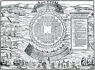
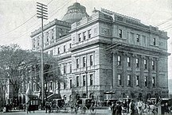

History of Montreal

The history of Montreal, located in Quebec, Canada, spans about 8,000 years. At the time of European contact, the area was inhabited by the St. Lawrence Iroquoians, a discrete and distinct group of Iroquoian-speaking indigenous people. they spoke Laurentian. Jacques Cartier became the first European to reach the area now known as Montreal in 1535 when he entered the village of Hochelaga on the Island of Montreal while in search of a passage to Asia during the Age of Exploration. Seventy years later, Samuel de Champlain unsuccessfully tried to create a fur trading post but the Mohawk of the Iroquois defended what they had been using as their hunting grounds. A mission named Ville Marie was built in 1642 as part of a project to create a French colonial empire. Ville Marie became a centre for the fur trade and French expansion into New France until 1760, when it was surrendered to the British army, following the French defeat of the Battle of the Plains of Abraham. British immigration expanded the city. The city's golden era of fur trading began with the advent of the locally owned North West Company. Montreal officially became a city in 1832. The city's growth was spurred by the opening of the Lachine Canal and Montreal was the capital of the United Province of Canada from 1844 to 1849. Growth continued and by 1860 Montreal was the largest city in British North America and the undisputed economic and cultural centre of Canada. Annexation of neighboring towns between 1883 and 1918 changed Montreal back to a mostly Francophone city. The Great Depression in Canada brought unemployment to the city, but this waned in the mid-1930s, and skyscrapers began to be built. World War II brought protests against conscription and caused the Conscription Crisis of 1944. Montreal's population surpassed one million in the early 1950s. A new metro system was added, Montreal's harbour was expanded, and the St. Lawrence Seaway was opened during this time. More skyscrapers were built along with museums. Montreal's international status was cemented by Expo 67 and the 1976 Summer Olympics. A major league baseball team, the Expos, played in Montreal from 1969 to 2004 when the team relocated to Washington, DC. Historically, business and finance in Montreal were under the control of Anglophones. With the rise of Quebec nationalism in the 1970s, many institutions relocated their headquarters to Toronto.
Pre-Contact
The area known today as Montreal had been inhabited by indigenous peoples for some 8,000 years, while the oldest known artifact found in Montreal proper is about 4,000 years old.[2] About 1000 CE, nomadic Iroquoian and other peoples around the Great Lakes began to adopt the cultivation of maize and more settled lifestyles. Some settled along the fertile St. Lawrence River, where fishing and hunting in nearby forests supported a full diet. By the 14th century, the people had built fortified villages similar to those described by Cartier on his later visit.[3] Historians and anthropologists have had many theories about the people encountered by Cartier, as well as the reasons for their disappearance from the valley about 1580. Since the 1950s, archeological and linguistic comparative studies have established many facts about the people. They are now called the St. Lawrence Iroquoians and recognized by scholars as distinct from other Iroquoian-language people, such as the Huron or Iroquois of the Haudenosaunee, although sharing some cultural characteristics. Their language has been called Laurentian, a distinct branch of the family.
The City of Montreal
Montreal was incorporated as a city in 1832. The city's growth was spurred by the opening of the Lachine Canal, which permitted ships to pass by the unnavigable Lachine Rapids south of the island. As the capital of the United Province of Canada from 1844 to 1849, Montreal attracted more English-speaking immigrants: Late Loyalists, Irish, Scottish, and English. Riots led by Tories led to the burning of the Provincial Parliament. Rather than rebuild, the government chose Toronto as the new capital of the colony.[81] In Montreal the Anglophone community built McGill, one of Canada's first universities, and the wealthy built large mansions at the foot of Mont Royal. Long before the Royal Military College of Canada was established in 1876, there were proposals for military colleges in Canada. Staffed by British Regulars, adult male students underwent a 3-month-long military course in Montreal in 1865 at the School of Military Instruction in Montreal. Established by Militia General Order in 1865, the school enabled Officers of Militia or Candidates for Commission or promotion in the Militia to learn Military duties, drill and discipline, to command a Company at Battalion Drill, to Drill a Company at Company Drill, the internal economy of a Company and the duties of a Company's Officer.[82] The school was retained at Confederation, in 1867. In 1868, The School of Artillery was formed in Montreal.